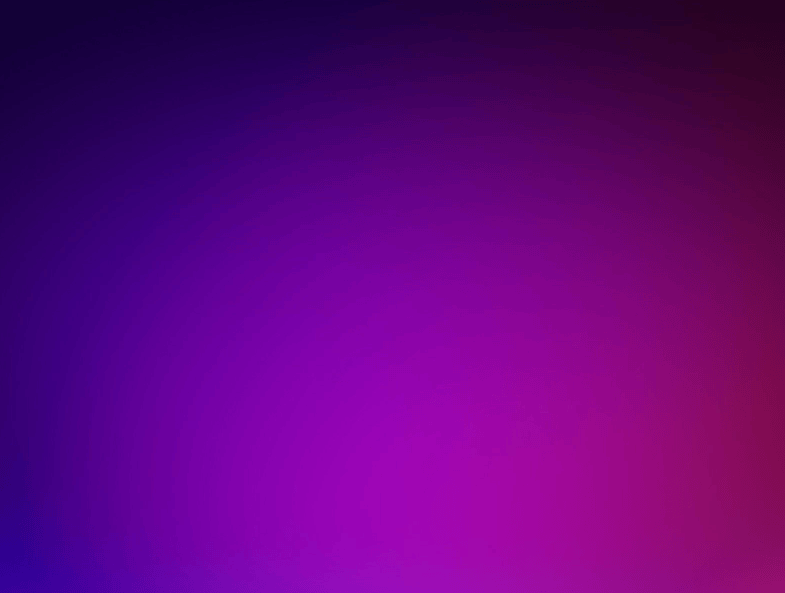

Favorites
Star any result to pin it. wisp opens on your Favorites tab, the stuff you actually use, one keypress away.
Press Alt+Space anywhere (fullscreen games included), type a few letters, hit Enter. wisp is gone before you finish thinking about it.
per-user install · no admin · no telemetry

Qt 6.11.1, C++, CMake, NSIS. The whole thing on GitHub.
Built around one motion: press, type, launch.
Star any result to pin it. wisp opens on your Favorites tab, the stuff you actually use, one keypress away.
Rebind the hotkey, pick an accent color, choose scan folders, and toggle per-user autostart.
Acrylic backdrop, neon outline, 60fps motion. It dismisses as smoothly as it opens.
Pick an accent from nine curated colors, or mix your own with a custom picker. The launcher restyles itself instantly.
The few shortcuts you'll actually use.